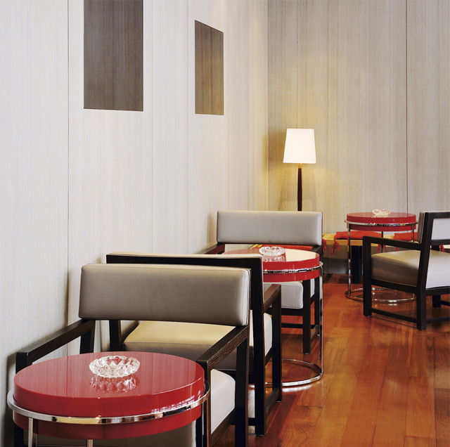
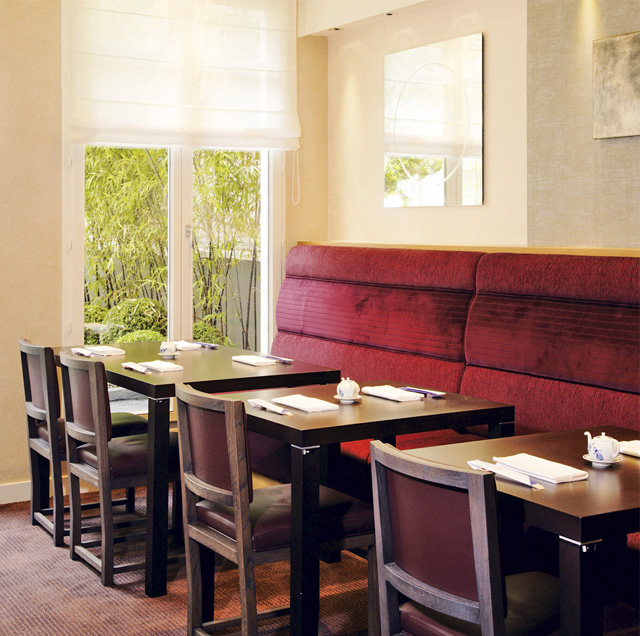

Toshimasa Higashiuchi opened the Hanawa in 2007, together with his son Mio. The concept was unique: a “salon du thé” stretches over three floors, traditional Japanese cuisine is served in an elegant Japanese open-plan atmosphere, there is a sushi bar, two private lounges – one of which looks out onto a Zen garden, and two rooms with teppanyaki tables. According to tradition, meals at the teppanyaki tables must be prepared directly before the eyes of the guest. In this respect, the Hanawa is no exception. However, the dishes created by chef Hiruma Mitsuhiro (who has cooked at some of the best addresses in Japan and France) have very little to do with traditional Japanese food. In fact, he only serves contemporary French cuisine. Some of the most popular dishes include the red king-crab and vodka flambé, beef filet with foie gras and fried figs, and a crispy sweetbread. The guests often mix the two traditions, perhaps starting with a sashimi – ordering a typical Japanese dish such as a sea-bream head in sake sauce, for instance – before going on to a traditional French main course, and finishing with a dessert in the salon-de-thé, where they are allowed to smoke. Excellent French wines are also a available.


{kind=link}
{kind=link}